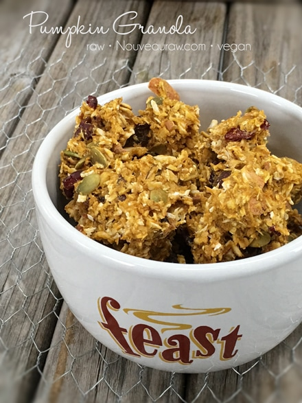

Pumpkin Granola

~ raw, vegan, gluten-free ~
Pumpkin, pumpkin, pumpkin…I just love pumpkins! When this time of year rolls around, I just get giddy when I walk into a grocery store and find pumpkins stacked all over.
The other day I ran into the store, leaving my husband in the truck, assuring him that I didn’t need his help because I only needed one thing. WRONG! As soon as I walked through those automatic opening doors, spreading apart for my grand entry…there they were.
Gorgeous, orange, robust pumpkins! I swear they just hopped into my arms. What was one to do? I didn’t grab a cart on the way in, but that didn’t detour me.
I found a hand-basket and loaded it up, then I found another handbasket and loaded it up too! Hey, I had to balance myself and give both arms a good workout, didn’t I? I waddled out to the truck with four double-bagged bags in hand. Move over Jane Fonda, da’ pumpkins are in da’house!
Ingredients:
Yields roughly 12 cups dried
- 4 cups raw, gluten-free rolled oats, soaked
- 1/2 cup raw almonds, soaked & chopped
- 1/2 cup unsweetened flaked coconut
- 3/4 cup sugar pumpkin puree
- 3/4 cup dried cranberries or goji berries, re-hydrated
- 1/2 cup raisins
- 1/4 cup raw pumpkin seeds, soaked
- 1/4 – 1/2 cup maple syrup or equivalent
- 1 tsp vanilla extract
- 1 1/2 tsp ground Ceylon cinnamon
- 1/2 tsp nutmeg
- 1/2 tsp ground ginger
- 1/2 tsp Himalayan salt
 Preparation:
Preparation:
- After soaking the oats, nuts, and seeds as instructed in the link above, drain and rinse them before adding them to the mixing bowl.
- The oats will take a few minutes to rinse. The water will be very milky and then start to get cloudy. It will never run clear but rinse under cool water for about 2 minutes, agitating it with your fingers the whole time. Squeeze the excess water from them and add to the mixing bowl.
- Now add the remaining ingredients: pumpkin puree, dried fruit, coconut, sweetener, vanilla, cinnamon, nutmeg, ginger, and salt. Mix well.
- Drop clusters of the batter on the teflex sheets that come with the dehydrator.
- If you don’t have those you can use parchment paper, but don’t use wax paper because the granola will stick to it.
- Dehydrate at 145 degrees (F) for 1 hour, then reduce to 115 degrees (F) and continue to dry for up to 24 hours.
- Partway through, flip the tray over onto the mesh screen, and peel off the teflex sheet.
- Continue drying until the desired dryness is reached.
- I tend to like my granola more on the chewy side than the crunchy side.
- Once done and cooled, store the granola in airtight containers. You can keep it on the countertop for walk-by munching, or it can be stored in the fridge or freezer to extend the shelf life. On the counter, it should last several weeks if it lasts that long!
- To learn more about maple syrup by clicking (here).
- Why do I specify Ceylon cinnamon? Click (here) to learn why.
- What is Himalayan pink salt and does it really matter? Click (here) to read more about it.
- Are oats gluten-free? Yes, read more about that (here).
- Are oats raw? Yes, they can be found. Click (here) to learn more.
- Do I need to soak and dehydrate oats? Not required but recommended. Click (here) to see why.
Culinary Explanations:
- Why do I start the dehydrator at 145 degrees (F)? Click (here) to learn the reason behind this.
- When working with fresh ingredients, it is important to taste test as you build a recipe. Learn why (here).
- Don’t own a dehydrator? Learn how to use your oven (here). I do however truly believe that it is a worthwhile investment. Click (here) to learn what I use.
© AmieSue.com